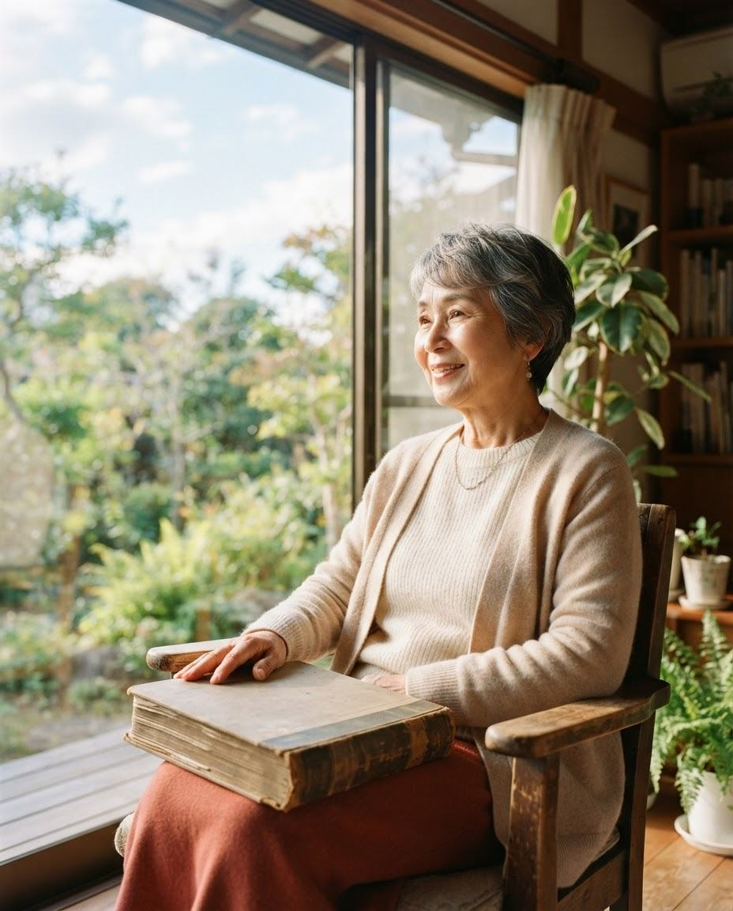
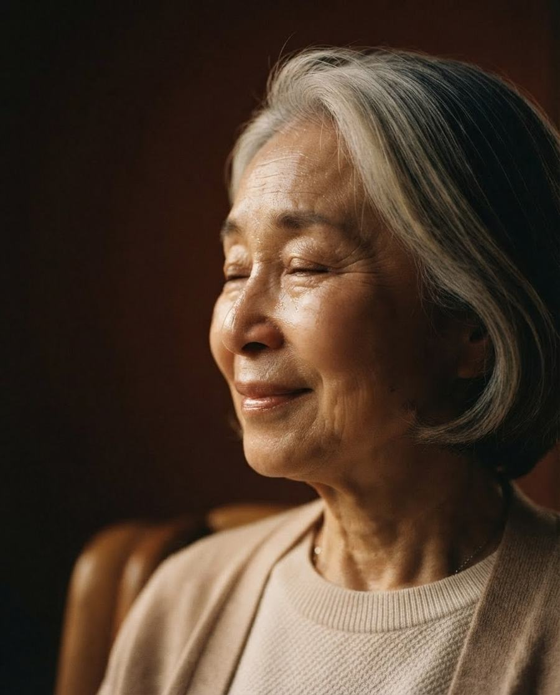
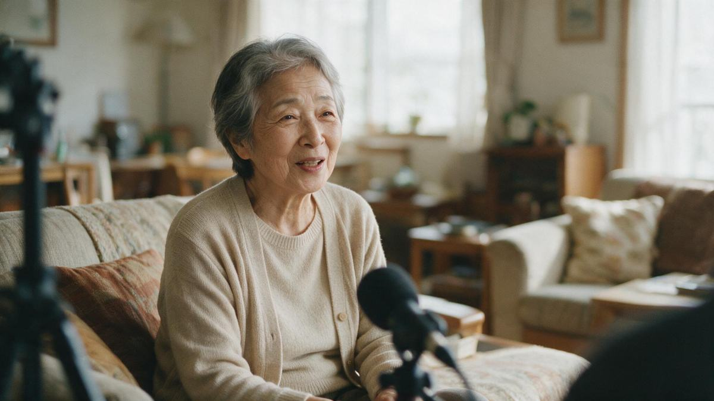
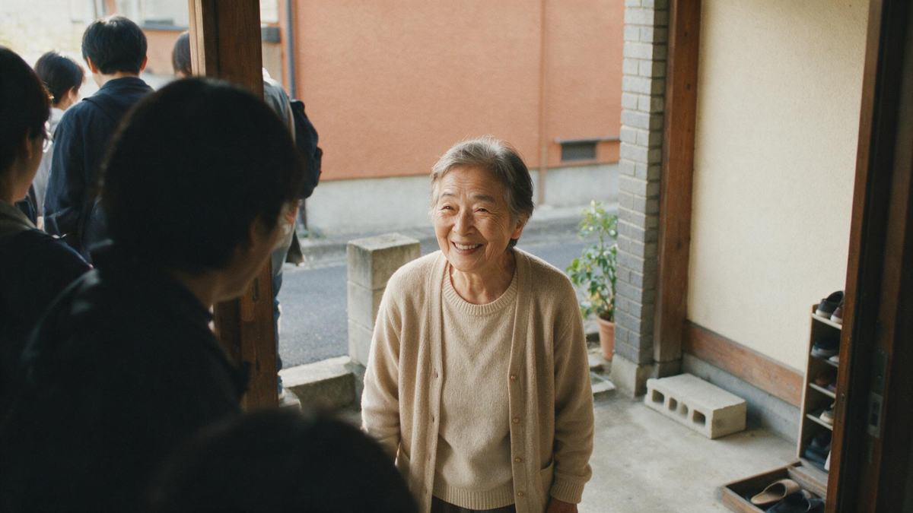
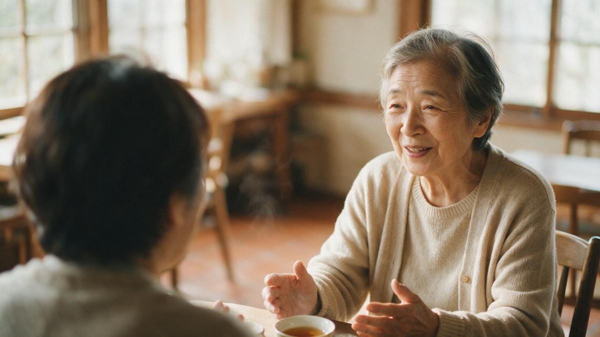
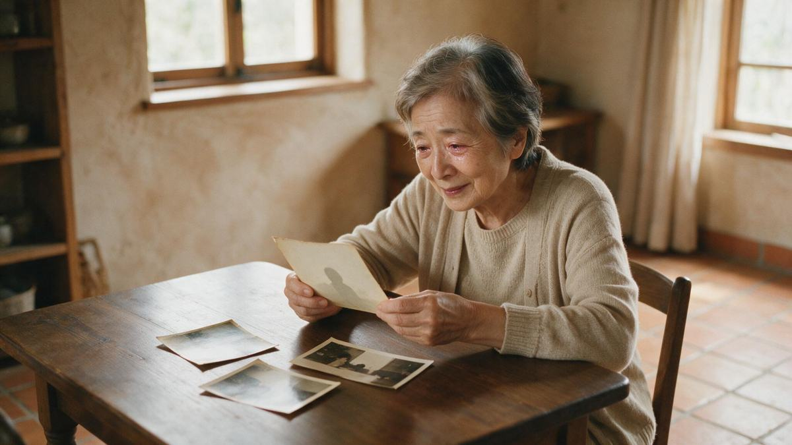
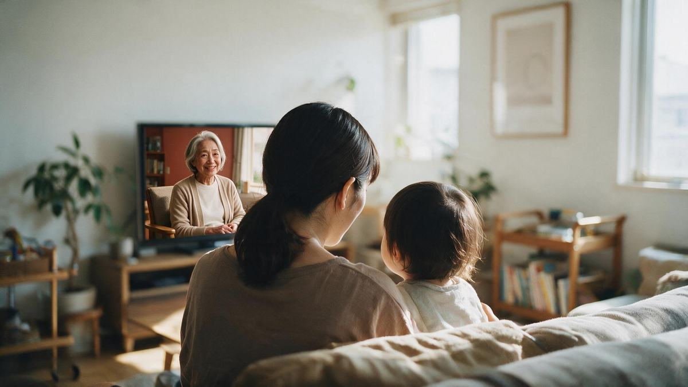

終活映像サービス
ただ映像を残すのではない。あなたの人生を知り、あなたと一緒に人生を振り返り、その人だけの物語を映像にする。それが LIFE STORY です。ご自身の終活にも、親への——大切な人への贈り物にも。
話すだけで、ショートムービーが残る LIFE STORY SESSION
55,000円〜（撮影・編集・データ納品込み／本制作時は全額充当）

写真は残せる。手紙も残せる。しかし——声・話し方・笑い方・表情・間・その人らしさまで残すことができるのは、映像だけ。

終活に関心を持つ人は増えている。それでも——
人は、残したいものがある。しかし、それを言葉にするきっかけがない。
だから LIFE STORY は「書く終活」ではなく「語る終活」から始めます。
会話を重ねることで、本人自身も気づいていなかった、その人の人生にある物語を見つけていく。テレビドキュメンタリーの取材設計をもとにした独自のインタビューメソッドで、「聞く力」を再現可能なサービス品質にしています。
人生を聞く。写真を見る。思い出を辿る。一緒に笑う。時には、思い出して泣く。
——その時間があるからこそ、他にはない映像が生まれる。

『ガイアの夜明け』をはじめ、数々のテレビドキュメンタリー番組のディレクションを担当。全国放送で培われた構成力・取材力を、一人ひとりの人生映像に注ぎます。「制作会社のネットワーク」ではなく、企画から取材・構成まで、番組を作ってきたディレクター自身が一貫して向き合う。
STEP 01MEET
いきなりカメラを回さない。一人の人として、人生について話を聞くことから始めます。

STEP 02LISTEN
幼少期、青春、恋愛、家族、仕事、人生の転機。嬉しかったこと、辛かったこと。

STEP 03DISCOVER
その人にとって本当に大切なものを見つける。それは「場所」かもしれないし、「人」かもしれないし、「一枚の写真」かもしれない。

STEP 04CREATE
見つけた人生を、その人に合った形で映像にする。全国放送基準の編集品質で。
STEP 05LEAVE
家族へ、子供へ、孫へ。そして、まだ見ぬ未来の誰かへ。

ENTRY
人生を、聞かせてください
55,000円〜
STANDARD
その人だけの人生映像を制作する
198,000円〜
DOCUMENTARY
あなたの人生を、一本の映画にする
498,000円〜
SESSION の料金は、本制作へ進む場合に制作費へ全額充当。「話してみる」が無駄になりません。最初から高額な決断をさせない——まず「話してみる」から始められる設計です。
※ 立ち上げ期は、事例掲載・お客様の声へのご協力を条件としたモニター価格をご用意します（掲載時はモニター条件である旨を明示します）。
一般的な自分史映像サービスは、最初から本制作の契約（調査範囲では約6万〜50万円超）から始まります。LIFE STORY の入口は「話すだけ」の SESSION。それでも、プロの取材・撮影・編集を経たショートムービーと映像データが手元に残ります。しかも料金は、本制作へ進めば全額が制作費に充当。この入口と充当の仕組みを持つサービスは、調査範囲では他に見当たりませんでした※。
話すだけで、映像が残る
55,000円〜
取材・撮影・編集・ショートムービー納品まで込み
本制作へ進めば、全額充当。
話すだけで映像が残る
SESSION 55,000円〜
最初から本制作を契約
（約6万〜50万円超）
本制作へ進めば全額充当
＝無駄にならない
充当の仕組みは
調査範囲では見当たらず
「何を残したいか」
人生から逆算して決める
5分/10分/20分など
分数・日数の固定プラン
枚数・日数を
先に固定しない
写真20〜100枚・撮影半日〜3日
などプランで固定
一人ひとりオリジナルの
構成・編集（全国放送基準）
定型テンプレートに
沿った編集も
現役の番組ディレクター本人が
企画から編集まで一貫
制作スタッフや
外部ネットワークによる分業も
保存から将来の引き継ぎまで
契約前に文書で明示
明示の範囲は
社により異なる
※「一般的な自分史映像サービス」は、自分史映像・終活映像の主要5社の公開情報（2026年8月時点・当社調べ・実ページ確認）をまとめた傾向です。各社のサービス内容・条件は異なり、単純な優劣を示すものではありません。
| LIFE STORY当サービス | A社自分史映像専業 | B社家族ギフト映像 | C社思い出ビデオ | D社終活専門家×映像 | E社ドキュメンタリー型 | |
|---|---|---|---|---|---|---|
| サービスの型 | 人生から逆算＋充当型 | 分数固定プラン（5分/10分/20分） | 撮影日数プラン | 分数＋撮影日数プラン | 単一プラン | ネットワーク型 |
| 内容・特徴 | 「話すだけ」のSESSION（ショートムービー納品付き）から開始。本制作へ進めば全額充当。番組ディレクター本人が一貫 | 撮影半日〜3日・写真20〜100枚をプランで固定。BGM・テロップ付き完成映像 | 写真スライドショー〜自宅撮影2日。お祝い事向けの構成。DVD/BD/MP4納品 | 本人→家族→友人へ取材を段階拡大。約5〜10分の完成映像・クラウド保管（年額） | 終活カウンセラーが定型の質問リストでインタビュー。エンディングノート同梱 | テレビ番組の実績スタッフと協働。プロナレーション・納期3〜4ヶ月 |
| 価格帯※ | 5.5万〜 19.8万〜 49.8万〜 |
15.0万〜 43.5万 |
約6万〜 14万 |
11.9万〜 42.1万 |
38.5万 | 税別 50万〜 |
※ 2026年8月時点・当社調べ（5社・実ページ確認の要約・匿名化）。価格は各社サイト掲載時点の値で、税込/税別の表記は各社サイトの掲載に準拠しています。内容・条件は各社異なるため単純な優劣比較はできません。
多くの自分史映像は「5分・10分・20分」と映像の分数や撮影日数を先に固定します。LIFE STORY は「何分の映像を買うか」ではなく「何を残したいか」から始める。プランの分数・日数で人生を切りません。
「まず話してみる」SESSION は、調査範囲では最安帯の入口（2026年8月・当社調べ）。「話すだけ」といっても、取材・撮影・編集を経たショートムービーと映像データの納品まで含みます。しかも本制作に進めば全額充当。高額な決断を最初に迫りません。
「テレビ品質」を謳うサービスはありますが、企画から取材・構成まで番組ディレクター本人が一貫して向き合う体制は、調査範囲では稀（2026年8月・当社調べ）。プロセス——向き合う時間——そのものが商品です。
七五三、成人式、結婚——人生の節目に写真館で記念写真を撮るように。LIFE STORY は、人生の節目に「動く記念写真」を残す、子から親への贈り物です。
SESSION＝撮影後約1ヶ月 / LIFE STORY＝約2〜3ヶ月 / DOCUMENTARY＝約3〜4ヶ月（取材回数により調整）
映像データ納品を基本に、DVD / Blu-ray・上映用データをオプションでご用意します。
SESSION＝前払い / LIFE STORY 以上＝着手金＋納品時残金（着手金率は事業設計で確定します）。
著作権・肖像権の帰属、撮影データの保存・削除、将来の公開範囲・ご家族への引き継ぎまで、契約前に文書で明示します。
人は、いつかいなくなる。
だからこそ、その人がいたことを、未来に残したい。
声。表情。笑い方。言葉。そして、その人らしさ。
いつか、この映像を見返したとき。
そこには、もう一度会いたい人がいる。
「終活映像を作りませんか？」ではありません。
——一度、自分の人生について話してみませんか。
ご本人からも、ご家族からも。無理な営業は一切いたしません。
メールアプリが開かない場合は mako@akibaground.jp へ直接どうぞ。